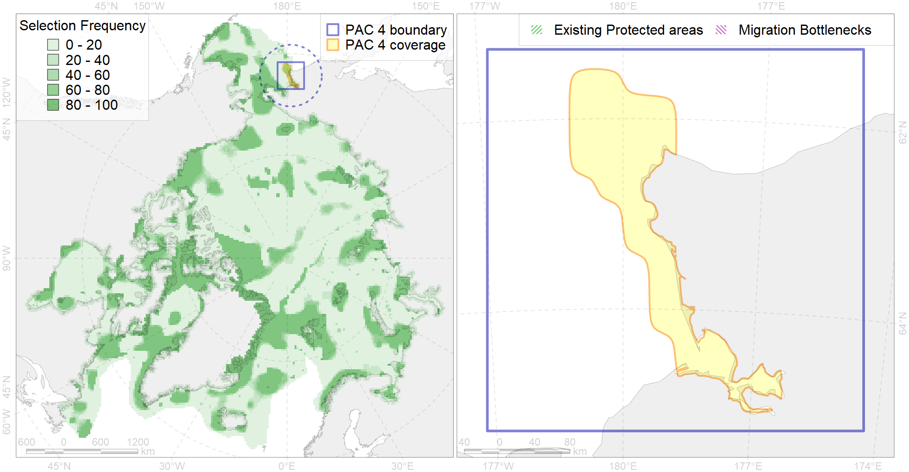

Region 4
Region 4
“ArcNet” scenario 33 achievement for region 4.
Use Accenter for advanced mode.

0
CFs inside of Region completely
4
CFs inside of Region at quarter
3
Complete-targets achievement by Region
10
Half-targets achievement by Region
| CF | Name | Target Achievement for Region | Proportion of Target Achievement in Region | Amount Proportion in Region |
|---|---|---|---|---|
| 5001 | Beluga of Anadyr summer distribution | 122.7% | 98.6% | 94.0% |
| 7094 | I.3.1.8. western Bering Sea shelf valleys | 80.7% | 75.6% | 32.3% |
| 5002 | Beluga of Anadyr winter distribution | 51.2% | 50.3% | 30.8% |
| 6014 | Spoon-billed sandpiper (Calidris pygmaea) breeding sites | 29.8% | 28.6% | 28.6% |
| 3029 | Marginal Ice Zone distribution in April in the Western Bering Sea LME | 167.6% | 92.6% | 22.3% |
| 6013 | Spoon-billed sandpiper (Calidris pygmaea) breeding grounds | 25.0% | 25.0% | 19.3% |
| 7093 | I.3.1.7. Navarin shelf | 95.4% | 83.6% | 19.2% |
| 8018 | Chukchi Sea estuaries | 26.3% | 13.8% | 15.7% |
| 7092 | I.3.1.6. Anadyr Gulf shelf | 98.9% | 21.2% | 12.9% |
| 4083 | Fish zoogeography, Pacific Region, 4 - high-boreal and 5 - low-boreal districts of the Western North-Pacific subregion | 167.9% | 58.2% | 11.7% |
| 6030 | Glaucous gull (Larus hyperboreus pallidissimus) breeding grounds | 90.3% | 15.2% | 11.3% |
| 7011 | Core of the Beringian Province of the North Pacific zoogeographical region | 43.8% | 13.8% | 9.8% |
| 2040 | Ringed seal molting areas in the Bering Sea | 24.4% | 18.5% | 7.5% |
| 7247 | seagrasses of the High Arctic | 20.6% | 11.3% | 6.2% |
| 2054 | Spotted seal foraging areas | 39.6% | 7.8% | 5.3% |
| 5110 | Bowhead whale of the Bering-Chukchi-Beaufort population winter distribution | 13.6% | 9.3% | 4.9% |
| 2058 | Bearded seal whelping areas in the Bering Sea as predicted by MIZ distribution | 13.7% | 4.9% | 4.6% |
| 6048 | Black-legged kittiwake (Rissa tridactyla tridactyla) breeding colonies | 6.6% | 4.8% | 4.5% |
| 6077 | Common murre (Uria aalge inornata) breeding colonies | 6.8% | 4.2% | 3.8% |
| 4034 | Feeding area of the Taranetz’s Char (Salvelinus taranetzi) (F 31) | 9.8% | 5.8% | 3.8% |
| 4025 | Feeding/migration area of the Coho Salmon (Oncorhynchus kisutch) (F 25) | 52.5% | 5.6% | 3.8% |
| 6039 | Ivory gull (Pagophila eburnea) Pacific wintering grounds | 13.6% | 10.2% | 3.5% |
| 6102 | 6102 Uriaalge inornatbreeding colonies | 7.5% | 4.5% | 3.3% |
| 4026 | Feeding/migration area of the Chinook Salmon (Oncorhynchus tshawytscha) (F 26) | 45.6% | 5.0% | 3.3% |
| 6107 | 6107 Fratercula corniculata breeding colonies | 10.5% | 4.1% | 3.0% |
| 3018 | Marginal Ice Zone distribution in April in the Chukchi Sea LME | 20.8% | 4.3% | 3.0% |
| 4033 | Feeding area of the Dolly Varden (Salvelinus malma) (F 30) | 19.8% | 4.1% | 2.9% |
| 2043 | Ringed seal whelping areas in the Bering Sea | 9.7% | 5.6% | 2.8% |
| 5044 | Bowhead whale of the Bering-Chukchi-Beaufort population winter core distribution | 4.7% | 4.6% | 2.8% |
| 6079 | Thick-billed murre (Uria lomvia arrra) breeding colonies | 3.6% | 3.3% | 2.7% |
| 4018 | Feeding area of the Vendace, Least cisco (Coregonus sardinellа), Euro-Asian populations (F 20) | 9.4% | 4.9% | 2.7% |
| 6100 | 6100 Risstridactylpollicarius breeding colonies | 3.4% | 3.4% | 2.7% |
| 2006 | Bearded seal whelping areas in the Bering Sea | 9.0% | 5.1% | 2.7% |
| 1017 | Pacific Walrus haulouts | 3.7% | 3.6% | 2.7% |
| 6087 | Red-legged kittiwake (Rissa brevirostris) wintering grounds | 9.7% | 4.5% | 2.4% |
| 2032 | Northern Fur seal range | 27.3% | 5.2% | 2.4% |
| 6103 | 6103 Urilomviarrrbreeding colonies | 4.1% | 3.1% | 2.3% |
| 2034 | Ribbon seal foraging areas in the Bering Sea | 30.5% | 4.9% | 2.2% |
| 4015 | Feeding area of the Broad whitefish (Coregonus nasus), American populations (F 19) | 5.4% | 4.6% | 2.2% |
| 5047 | Fin whale summer feeding areas in the Bering Sea | 8.0% | 7.0% | 2.0% |
| 4044 | Range of the Pacific cod (Gadus macrocephalus) (F 38) | 52.5% | 3.6% | 1.9% |
| 1019 | Pacific Walrus Winter Distribution | 6.5% | 3.5% | 1.9% |
| 5052 | Gray whale summer feeding areas | 4.7% | 2.2% | 1.8% |
| 4091 | Fish zoogeography, Arctic Region, Subarctic Transitional-Pacific Province | 10.5% | 3.0% | 1.8% |
| 4024 | Distribution of the Chum Salmon (Oncorhynchus keta) (F24) | 23.7% | 2.8% | 1.7% |
| 5062 | Humpback whale summer feeding areas in the Pacific Arctic | 4.0% | 1.1% | 1.7% |
| 6085 | Horned puffin (Fratercula corniculata) breeding colonies | 4.3% | 2.0% | 1.6% |
| 4004 | Range of the Pacific Capelin (Mallotus villosus catervarius) (F11) | 44.8% | 3.3% | 1.6% |
| 1018 | Pacific Walrus Summer-Autumn Distribution | 5.6% | 2.4% | 1.6% |
| 4050 | Range of the Pollock (Theragra chalcogramma) (F 43) | 21.8% | 3.2% | 1.6% |
| 4065 | Range of the Pacific Halibut (Reinhardtius hippoglossoides matsuurae) (F 50) | 43.4% | 4.5% | 1.6% |
| 4021 | Feeding area of the Inconnu (Stenodus leucichthys nelma), Euro-Asian populations (F 22) | 3.6% | 3.0% | 1.4% |
| 4023 | Feeding/migration area of the Pink Salmon (Oncorhynchus gorbuscha), native distribution (F23) | 19.4% | 2.9% | 1.4% |
| 4042 | Range of the Saffron cod (Eleginus gracilis) (F 36) | 19.3% | 2.8% | 1.4% |
| 6078 | Common murre (Uria aalge inornata) wintering grounds | 5.7% | 3.6% | 1.2% |
| 6084 | Thick-billed murre (Uria lomvia) Pacific wintering grounds | 4.2% | 3.6% | 1.2% |
| 4070 | Local forms of the White-Sea herring (Clupea pallasii) (F8) | 3.5% | 2.0% | 1.0% |
| 6017 | Long-tailed duck (Clangula hyemalis) East Asian wintering grounds | 1.2% | 1.2% | 1.0% |
| 6066 | Common eider (Somateria mollissima v-nigrum) breeding&moulting grounds | 2.5% | 2.4% | 1.0% |
| 2060 | Ribbon seal whelping areas as predicted by MIZ distribution | 7.5% | 2.6% | 0.9% |
| 4058 | Range of the Arctic flounder (Liopsetta glacialis) (F48) | 12.5% | 1.6% | 0.9% |
| 4006 | Feeding/nursery area of the Pacific rainbow smelt (Osmerus dentex) (F12) | 3.1% | 1.2% | 0.6% |
| 4052 | Range of the Fourhorn Sculpin (Myoxocephalus quadricornis) (F 45), American populations | 17.8% | 1.2% | 0.6% |
| 7090 | I.3.1.4. Middle and outer shelf of eastern Bering Sea | 8.3% | 0.8% | 0.4% |
| 5112 | Arctic Cetaceans (beluga, bowhead, narwhal) winter habitats as predicterd by MIZ | 0.7% | 0.6% | 0.4% |
| 4084 | Fish zoogeography, Pacific Region, 6 - high-boreal and 7 - low-boreal districts of the Eastern North-Pacific subregion | 2.7% | 0.6% | 0.3% |
| 4041 | Range of the Polar Cod (Boreogadus saida) (F35) | 0.9% | 0.4% | 0.1% |
| 9004 | polar bear of the CS (Chukchi Sea) subpopulation distribution | 0.2% | 0.2% | 0.1% |
| 3017 | Marginal Ice Zone distribution in April in the Eastern Bering Sea LME | 0.1% | 0.0% | 0.0% |